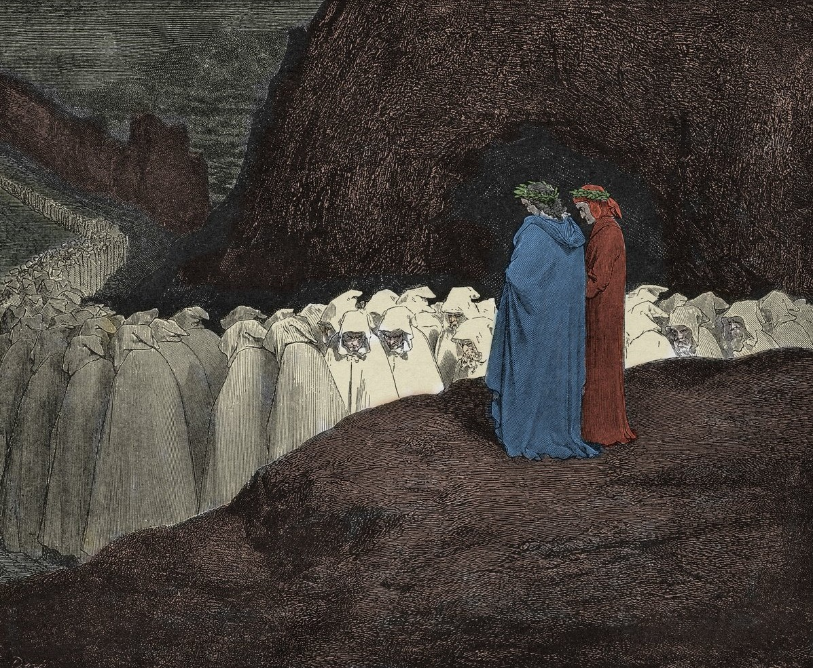

Inseguiti dai diavoli infuriati, i poeti scivolano nella sesta bolgia, dove si trovano gli ipocriti. Questi peccatori camminano lentamente sotto il peso di pesanti cappe di piombo, dorate all'esterno. Dante parla con due frati godenti bolognesi, Catalano e Loderingo, e osserva con stupore Caifa, il sommo sacerdote che condannò Gesù, crocifisso a terra e calpestato dai passanti.
Dopo una faticosa scalata tra le rocce del ponte crollato, i poeti raggiungono la settima bolgia, occupata dai ladri. I peccatori corrono nudi in mezzo a una spaventosa moltitudine di serpenti che li legano e li tormentano. Dante assiste alla terribile metamorfosi di Vanni Fucci, il quale, morso da un rettile, incenerisce all'istante per poi ricomporsi subito dopo come una fenice.
